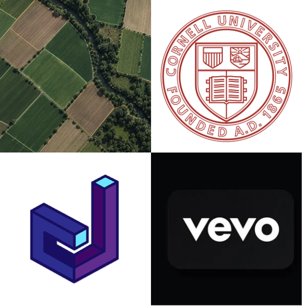

Playlist
Experience
Roles, teams, and contributions.
1 VevoData Analytics & Research Intern · Summer 2026 Summer 2026
Contribution
Built and maintained KPI-driven Looker dashboards, validated large-scale viewership data with PostgreSQL and AWS, and translated analysis into recommendations for cross-functional teams.
Tools
Looker · PostgreSQL · AWS
2 Allington LabUndergraduate Research Assistant · Jan. 2026–Present Jan. 2026–Present
Contribution
Created labeled satellite-imagery training data for a land-use classification pipeline in Uttarakhand, India, and supported PyTorch and QGIS preprocessing for active versus abandoned agriculture.
Tools
PyTorch · QGIS · Satellite imagery
3 Cornell Data JournalData Analyst · Sept. 2025–Present Sept. 2025–Present
Contribution
Analyzed and validated web-scraped and survey data with Python and R, then shared findings through visual stories for non-technical audiences in a published article and club research symposium.
Tools
Python · R